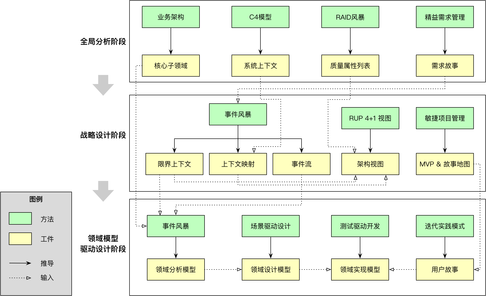
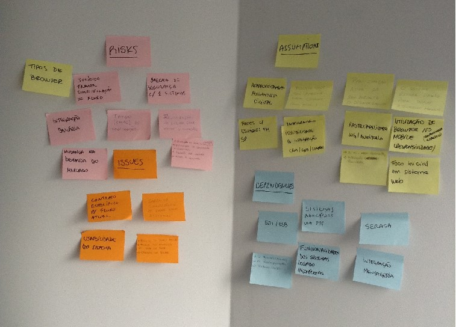
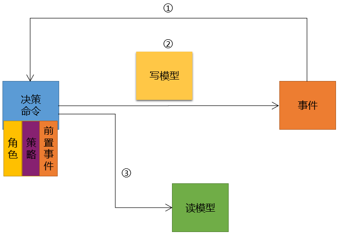

- 001 「战略篇」访谈 DDD 和微服务是什么关系？.md.html
- 002 「战略篇」开篇词：领域驱动设计，重焕青春的设计经典.md.html
- 003 领域驱动设计概览.md.html
- 004 深入分析软件的复杂度.md.html
- 005 控制软件复杂度的原则.md.html
- 006 领域驱动设计对软件复杂度的应对（上）.md.html
- 007 领域驱动设计对软件复杂度的应对（下）.md.html
- 008 软件开发团队的沟通与协作.md.html
- 009 运用领域场景分析提炼领域知识（上）.md.html
- 010 运用领域场景分析提炼领域知识（下）.md.html
- 011 建立统一语言.md.html
- 012 理解限界上下文.md.html
- 013 限界上下文的控制力（上）.md.html
- 014 限界上下文的控制力（下）.md.html
- 015 识别限界上下文（上）.md.html
- 016 识别限界上下文（下）.md.html
- 017 理解上下文映射.md.html
- 018 上下文映射的团队协作模式.md.html
- 019 上下文映射的通信集成模式.md.html
- 020 辨别限界上下文的协作关系（上）.md.html
- 021 辨别限界上下文的协作关系（下）.md.html
- 022 认识分层架构.md.html
- 023 分层架构的演化.md.html
- 024 领域驱动架构的演进.md.html
- 025 案例 层次的职责与协作关系（图文篇）.md.html
- 026 限界上下文与架构.md.html
- 027 限界上下文对架构的影响.md.html
- 028 领域驱动设计的代码模型.md.html
- 029 代码模型的架构决策.md.html
- 030 实践 先启阶段的需求分析.md.html
- 031 实践 先启阶段的领域场景分析（上）.md.html
- 032 实践 先启阶段的领域场景分析（下）.md.html
- 033 实践 识别限界上下文.md.html
- 034 实践 确定限界上下文的协作关系.md.html
- 035 实践 EAS 的整体架构.md.html
- 036 「战术篇」访谈：DDD 能帮开发团队提高设计水平吗？.md.html
- 037 「战术篇」开篇词：领域驱动设计的不确定性.md.html
- 038 什么是模型.md.html
- 039 数据分析模型.md.html
- 040 数据设计模型.md.html
- 041 数据模型与对象模型.md.html
- 042 数据实现模型.md.html
- 043 案例 培训管理系统.md.html
- 044 服务资源模型.md.html
- 045 服务行为模型.md.html
- 046 服务设计模型.md.html
- 047 领域模型驱动设计.md.html
- 048 领域实现模型.md.html
- 049 理解领域模型.md.html
- 050 领域模型与结构范式.md.html
- 051 领域模型与对象范式（上）.md.html
- 052 领域模型与对象范式（中）.md.html
- 053 领域模型与对象范式（下）.md.html
- 054 领域模型与函数范式.md.html
- 055 领域驱动分层架构与对象模型.md.html
- 056 统一语言与领域分析模型.md.html
- 057 精炼领域分析模型.md.html
- 058 彩色 UML 与彩色建模.md.html
- 059 四色建模法.md.html
- 060 案例 订单核心流程的四色建模.md.html
- 061 事件风暴与业务全景探索.md.html
- 062 事件风暴与领域分析建模.md.html
- 063 案例 订单核心流程的事件风暴.md.html
- 064 表达领域设计模型.md.html
- 065 实体.md.html
- 066 值对象.md.html
- 067 对象图与聚合.md.html
- 068 聚合设计原则.md.html
- 069 聚合之间的关系.md.html
- 070 聚合的设计过程.md.html
- 071 案例 培训领域模型的聚合设计.md.html
- 072 领域模型对象的生命周期-工厂.md.html
- 073 领域模型对象的生命周期-资源库.md.html
- 074 领域服务.md.html
- 075 案例 领域设计模型的价值.md.html
- 076 应用服务.md.html
- 077 场景的设计驱动力.md.html
- 078 案例 薪资管理系统的场景驱动设计.md.html
- 079 场景驱动设计与 DCI 模式.md.html
- 080 领域事件.md.html
- 081 发布者—订阅者模式.md.html
- 082 事件溯源模式.md.html
- 083 测试优先的领域实现建模.md.html
- 084 深入理解简单设计.md.html
- 085 案例 薪资管理系统的测试驱动开发（上）.md.html
- 086 案例 薪资管理系统的测试驱动开发（下）.md.html
- 087 对象关系映射（上）.md.html
- 088 对象关系映射（下）.md.html
- 089 领域模型与数据模型.md.html
- 090 领域驱动设计对持久化的影响.md.html
- 091 领域驱动设计体系.md.html
- 092 子领域与限界上下文.md.html
- 093 限界上下文的边界与协作.md.html
- 094 限界上下文之间的分布式通信.md.html
- 095 命令查询职责分离.md.html
- 096 分布式柔性事务.md.html
- 097 设计概念的统一语言.md.html
- 098 模型对象.md.html
- 099 领域驱动设计参考过程模型.md.html
- 100 领域驱动设计的精髓.md.html
- 101 实践 员工上下文的领域建模.md.html
- 102 实践 考勤上下文的领域建模.md.html
- 103 实践 项目上下文的领域建模.md.html
- 104 实践 培训上下文的业务需求.md.html
- 105 实践 培训上下文的领域分析建模.md.html
- 106 实践 培训上下文的领域设计建模.md.html
- 107 实践 培训上下文的领域实现建模.md.html
- 108 实践 EAS 系统的代码模型.md.html
- 109 后记：如何学习领域驱动设计.md.html
- 捐赠
099 领域驱动设计参考过程模型
通过领域驱动设计魔方，我们从业务、技术与管理三个维度引入了有助于领域驱动设计的方法和模式，同时梳理了影响领域驱动战略设计的架构因素，确定以“四个边界”为核心对领域逻辑进行控制，规定了领域驱动设计团队必须遵循的纪律，这一切的目的都是为了能够帮助团队完成领域驱动设计的落地。为了确保领域驱动设计的包容性和开放性，只要不违背领域驱动设计的核心思想，诸多方法、模式与实践都可以纳入到这个方法体系中，使得领域驱动设计能够面对不同的领域不同的需求提供更合理的设计方法；但不可避免的，增加的这些内容又不可避免地增加了实施过程的复杂度。
没有一套放之四海而皆准的过程方法能够一劳永逸地解决所有问题，但为了降低实施领域驱动设计的难度，确乎可以提供一套切实可行的最佳实践对整个过程进行固化与简化，因此我提出了一套领域驱动设计参考过程模型。这套过程模型不能解决实施过程中的所有问题，也无法规避需要凭借经验的现实问题，但该模型在实践中已得到了证明：它能够在一定程度上降低实施门槛，同时保证足够良好的设计质量。
整个参考过程模型如下图所示：

全局分析阶段
在全局分析阶段，可以引入：
- 业务架构的价值链
- C4 模型的系统上下文
- RAID 风暴
- 精益需求管理
业务架构的价值链
业务架构将企业作为一个整体，从不同视角评估产品或项目带来的影响。业务架构价值流（Value Stream）描述了企业为利益相关人提供了什么价值，通过它就可以把利益相关人的关注点分离出来，再与待开发的软件系统结合，就能帮助我们明确系统的问题空间（Problem Space），了解系统的价值与痛点所在，最终确定系统的核心子领域。识别出来的核心子领域可以指导我们在解决方案空间（Solution Space）针对限界上下文确定模型驱动设计的方式与过程。
系统上下文
系统上下文属于 Simon Brown 提出的 C4 模型，体现了系统最高的抽象层次。通过它确定系统的边界，体现系统与用户和外部系统之间的关系。Simon Brown 认为系统上下文可以作为技术与非技术人员讨论的起点，并有助于理解系统间的接口。通过系统上下文，还可以确定系统的范围与边界，不在上下文边界内的功能与模块就只需要考虑如何与之协作，即确定上下文映射的模式。
RAID风暴
RAID 风暴通过可视化的手法识别软件系统的风险（Risk）、假设（Assumption）、问题（Issue）和依赖（Dependency），这些内容都是影响架构质量的关注点。正如在《架构之美》中，John Klein、David Weiss 写道：
软件架构师的首要关注点不是系统的功能。……你关注的是需要满足的品质。品质关注点指明了功能必须以何种方式交付，才能被系统的利益相关人所接受，系统的结果包含这些人的既定利益。
这里所谓的“品质”，即我们常说的质量属性（Quality Attribute），这些质量属性会直接影响整个软件系统的技术复杂度。虽然领域驱动设计力求将业务复杂度与技术复杂度分离，但彼此之间的影响仍然不可忽视。在全局分析阶段识别这些质量属性，确定架构约束，并由此作出技术决策，可以有效地帮助我们确定业务与技术之间的边界。例如，通过评估风险，若能确定某个功能存在高并发时的性能风险，就能帮助我们确定限界上下文的应用边界；通过识别依赖，可以确定系统与外部系统之间的集成方式，从而确定上下文映射的模式。
RAID 风暴应以工作坊方式进行。四个象限分别代表风险、假设、问题与依赖，由团队成员根据自己对系统的理解，用即时贴写下这些内容，根据投票来排定它们的优先级。RAID 风暴的产出如下图所示：

精益需求管理
精益需求管理是一套完整的需求管理体系，通过捕获原始的市场需求，对需求进行分析研讨。这个过程往往被称为项目先启阶段，由项目的业务人员与技术人员之间进行互动协作，对产品的未来愿景和战略定位达成一致，明确产品战略和产品发展蓝图，它们左右了产品交付范围的优先级。
对需求的收集与分析是一个需求不断细化的过程。Robertson 引入了拖网这个词来描述收集需求的过程，即像“拖网渔船捕捞鱼”那样来收集需求。第一遍，我们可以用大网眼的渔网捞一遍需求池，以此得到所有的大需求。通过这些大需求，形成对软件的整体感觉。接下来，用网眼稍微小一些的渔网得到中等大小的需求，暂时还不用顾及那些小需求。在这个比喻中，大小决定于对于此软件的商业价值高低或者必要性程度等。
精益需求管理引入了典型用户分析，从角色“每天做什么”、“关键任务“、”担心“、”痛点“等角度分析系统大的需求，即“拖网渔船捕捞鱼”中的第一步。然后，进行用户场景分析，针对用户每天做的事情，分析系统如何提供流程性的操作来满足客户的需求，从而挖掘关键路径和依附于关键路径上的典型分支，获得用户体验地图（User Journey Map）。一张体验地图可以直观的表达出用户操作的期望、目标和用户体验，确定用户与产品的一些接触点，从而整体把控和评估产品需求和体验。对用户体验地图的节点再进行用户体验设计，如采用产品草图的方式，对关键节点以线框图的方式输出，也可以采用原型和视觉稿模型的方式和客户快速验证需求。最后，需求分析师通过分类归纳，获得整个系统的史诗级故事与特性列表。这是一个完整的需求捕获与分析的方法体系，它的输出是领域分析建模的基础。
战略设计阶段
在战略设计阶段，可以引入：
- 事件风暴
- RUP 4+1 视图
- 敏捷项目管理
事件风暴
事件风暴在战略设计阶段，主要目的是探索业务全景，通过事件流获得限界上下文和上下文映射。这一过程其实是一个自下而上的设计过程，组成事件流的领域事件既可以清晰地表达业务执行的流程，又能通过事件的命名提炼领域概念，确定统一语言。体现了统一语言的领域事件将成为归纳和概况限界上下文的主要输入，领域事件的参与者可以帮助我们确定领域事件之间的关系强弱。这时，通过识别事件流中的领域事件，倘若发现相邻两个事件之间的关系较弱，或者它们明显处于关注点不同的阶段，就可以对其进行分割，作为限界上下文的边界。然后再梳理所有的领域事件，根据组成事件的名词和动词发现事件之间的相关性，归纳那些具有强相关性的事件，为其提炼一个整体概念，即可作为限界上下文。
在确定限界上下文之后，即可确定跨限界上下文之间相邻的领域事件。若后置事件的参与者为前置事件，则说明这两个领域事件所处的限界上下文之间存在协作关系。若上下文映射采用客户方—供应方模式，即可确定前置事件所处的限界上下文为下游，后置事件所处的限界上下文为下游。例如，在线课堂的事件流包含了如下三个连续的领域事件，它们分处三个不同的限界上下文：
“诊断已完成”事件是“课程已推荐”事件的参与者，它们存在因果关系，前置事件所在的“诊断”限界上下文为下游；“课程已加入报名单”事件有自己的角色参与者，故而与前置事件没有关系，对应的限界上下文在这个领域场景中就不存在协作关系。根据所示的领域场景，可以暂时得到这三个限界上下文之间的协作关系：
上下文映射对于整个系统架构而言非常重要，如果说限界上下文体现了“高内聚”原则，上下文映射就体现了“低耦合”原则。确定上下文映射不能只凭经验判断，事件风暴的事件流可以提供切实可行的判断标准，因为事件流中的领域事件几乎覆盖了完整的领域场景。对跨限界上下文的领域事件进行一一识别，就能最终确定整个系统限界上下文之间的协作关系。如果限界上下文之间采用发布-订阅模式，则事件风暴识别出来的领域事件更是明确了彼此之间的通信消息协议。
RUP 4+1 视图
RUP 4+1 视图可以从整体架构角度将领域驱动战略设计中的各种模式整合为统一的架构视图。其中，逻辑视图确定了系统层次与限界上下文层次的逻辑结构，进程视图确定了限界上下文之间包括与外部系统之间的通信关系，物理视图确定了限界上下文的部署模式与资源占用情况，开发视图确定了整个系统以及限界上下文内部的代码结构。由此输出的架构视图能够为领域驱动战术设计提供清晰直观的指导。
敏捷项目管理
以“限界上下文”为核心的领域驱动设计，需要遵循“康威定律”划分团队边界，建立特性团队，才能促进团队中各个角色之间的交流与协作。同时，整个建模过程也需要采用迭代的方式进行。引入敏捷项目管理方法，结合全局分析阶段确定的价值流与需求故事列表，就能确定发布计划（MVP）与迭代计划。整个领域模型驱动设计的过程都应与发布和迭代计划保持一致，小步前行，避免建模陷入分析瘫痪与过度设计，还能通过增量开发出来的新功能获得及时的反馈。
领域模型驱动设计阶段
在领域模型驱动设计阶段，可以引入：
- 迭代实践模式
- 事件风暴
- 场景驱动设计
- 测试驱动开发
迭代实践模式
在迭代建模与开发阶段，针对迭代生命周期和用户故事生命周期可以开展不同形式的沟通与协作。在这个过程中，所有沟通协作的关键点如下图所示：
计划会议、演示会议与每日站立会议等会议能促进整个特性团队的沟通与交流，为用户故事引入的 Kick Off 和 Desk Check 迭代实践又能促进需求分析人员、开发人员与测试人员针对一个用户故事达成认识上的一致。通过如此频繁高效的沟通，就能针对业务需求达成整个团队的共识，有助于提炼领域知识，建立统一语言。为特性团队引入这样的迭代实践模式，是高质量领域建模的基础与前提。
事件风暴
在进行领域模型驱动设计之前，需要结合全局分析阶段输出的核心子领域与质量属性列表，确定哪些限界上下文需要采用领域模型驱动设计，以达成最佳的成本收益比。只有属于核心子领域的限界上下文才需要采用领域模型驱动设计。
倘若采用领域模型驱动设计，则事件风暴可以继续为领域分析建模提供方法支持，它提供了识别领域模型的有序步骤：

首先，通过领域事件驱动出决策命令，并将事件的参与者移动到决策命令之上，作为触发决策命令的主语；其次，由决策命令与领域事件之间的关系驱动出聚合（写模型），该写模型就是领域事件改变其状态的目标对象；最后，由参与者、决策命令与聚合之间的关系驱动出读模型。读模型与写模型组成了以“领域事件”为中心的领域场景对应的领域分析模型。由于事件风暴已经识别出各个事件所处的限界上下文，因此在分析建模阶段，应该为每个限界上下文输出自己的领域分析模型。
场景驱动设计
在领域分析模型基础之上，进一步确定类之间的关系，包括继承、组合与依赖关系，明确类的设计角色，包括实体还是值对象，然后利用聚合设计的庖丁解牛过程，确定每个聚合的边界与范围。在确定聚合之后，即可确定管理聚合生命周期的聚合与工厂。然后，通过场景驱动设计识别领域场景，进行任务分解，并对各个角色构造型分配职责，就能进一步细化领域模型，获得领域设计模型。领域设计模型由类图和时序图共同表达领域模型对象之间的静态结构与动态协作。
测试驱动开发
利用场景驱动设计获得的领域设计模型，可以在最大程度保障聚合内实体与值对象承担领域内核的作用，如此就更加有利于为领域逻辑编写自动化测试。针对场景驱动设计分解出来的任务确定测试用例，即可开展测试驱动开发。严格遵循简单设计原则与测试驱动开发三定律，就能一步一步驱动出领域逻辑的实现代码，并利用重构发现隐藏的领域概念，改进产品代码和测试代码的质量，共同组成领域实现模型。由此，即可完成以“领域”为核心的从全局分析阶段、战略设计阶段到领域模型驱动设计阶段的领域驱动设计全过程。
© 2019 - 2023 Liangliang Lee. Powered by gin and hexo-theme-book.